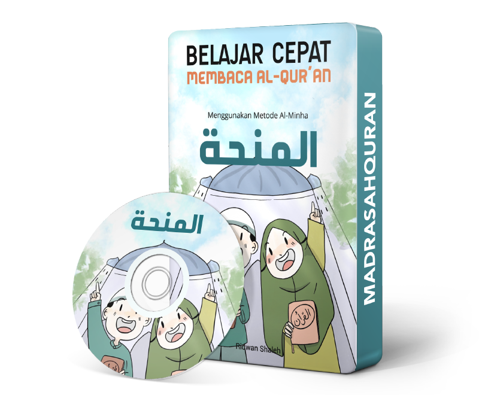

AL-MINHA KIDS
Modul Belajar yang Akan Membantu Anak Anda Lancar Membaca Al-Qur'an dengan Cepat
Gratis Ongkir Se-Indonesia
Dengan menggunakan Metode Al-Minha, Anak Anda akan dibimbing belajar membaca Al-Qur'an dengan cepat disertai irama (nagham).
Terbukti telah membantu lebih dari 1300 anak lancar membaca Al-Qur'an.
Mengapa Sangat Penting Anak Kita Belajar Membaca Al-Qur'an?
-
Al-Qur'an adalah pedoman hidup bagi setiap muslim, maka penting bagi kita untuk mengajarkan Al-Qur'an kepada anak-anak kita agar mereka paham akan pedoman hidupnya.
-
Cita-cita terbesar setiap orang tua adalah memiliki anak yang sholeh yang senantiasa mendoakan orang tuanya ketika telah wafat. Lantas bagaimana caranya anak-anak kita menjadi anak yang sholeh jika mereka tidak bisa membaca Al-Qur'an?
-
Dua hal yang diwariskan oleh Nabi Muhammad SAW agar umatnya tidak tersesat dalam menjalani hidup di dunia adalah Al-Qur'an dan As-Sunnah. Tentu saja kita tidak ingin anak-anak kita tersesat dalam menjalani hidup di dunia sepeninggal kita.
-
Anak adalah cerminan orang tuanya. Anak akan belajar apa yang penting bagi orang tuanya dan apa yang tidak. Jika kita mengajarkan betapa pentingnya Al-Qur'an maka mereka akan menganggap hal tersebut penting juga.
-
Waktu terbaik bagi seseorang untuk belajar membaca Al-Qur'an adalah di usia muda. Banyak orang yang hingga dewasanya belum bisa membaca Al-Qur'an adalah karena semasa kecilnya tidak sungguh-sungguh dalam belajar membaca Al-Qur'an.
Memperkenalkan
Al-Minha Kids
Merupakan modul belajar dalam bentuk video yang dirancang khusus untuk membantu mempermudah dan mempercepat anak-anak dalam belajar membaca Al-Qur'an. Melalui modul belajar ini anak-anak akan dibimbing agar mampu membaca Al-Qur'an dengan benar baik dalam pengucapan hurufnya maupun dalam panjang pendeknya bacaan. Melalui metode Al-Minha, anak-anak juga akan dibimbung untuk mampu membaca Al-Qur'an dengan irama yang indah dan enak didengar.
Dilengkapi dengan Buku Panduan Al-Minha Jilid 1
Sebagai Pedoman Pembelajaran
Apa itu Metode Belajar Al-Minha?
Al-Minha merupakan metode yang dihadirkan secara khusus untuk mempermudah dan mempercepat belajar membaca Al-Qur'an. Selain materi yang dirancang secara sistematis, ciri khas metode ini disampaikan dengan Nagham (irama) dan penguasaan Ilmu Tajwid Praktis.
Belajar Al-Qur'an dengan metode Al-Minha insya Allah menyenangkan, dinamis, efektif dan efisien.
Mengapa Al-Minha Kids?
Berikut ini beberapa kelebihan dari Modul Belajar Al-Minha Kids:
Gratis Update Materi
Gratis download pembaharuan materi selamanya jika ada penambahan atau perubahan materi modul belajar.
Modul Belajar Video
Modul belajar berbentuk video yang dikemas dalam bentuk DVD dan bisa didownload melalui link yang diberikan.
Irama Bacaan Bayati
Dengan metode Al-Minha, anak-anak akan belajar membaca Al-Qur'an dengan terbiasa menggunakan irama.
Belajar Cepat & Terarah
Dengan metode Al-Minha, anak-anak akan belajar membaca Al-Qur'an secara runtut dan terarah dengan cepat.
Garansi Uang Kembali
Gratis uang kembali jika setelah belajar dengan maksimal anak Anda tetap tidak ada kemajuan dalam baca Al-Qur'an.
Gratis Ongkir Se-Indonesia
Gratis ongkir pengiriman paket belajar se-Indonesia untuk 100 orang pertama yang melakukan pemesanan.
Apa yang Dipelajari di Al-Minha Kids?
Berikut ini adalah yang akan dipelajari di Al-Minha Kids:
-
Anak Anda akan belajar tentang adab-adab, keutamaan dan manfaat membaca serta mempelajari Al-Qur'an
-
Anak Anda akan belajar mengenal Huruf Hijaiyah dan bagaimana cara mengucapkannya secara baik dan benar sesuai dengan karakter setiap hurufnya (Makhorijul Huruf)
-
Anak Anda akan belajar merangkai huruf-huruf Hijaiyah serta penempatannya baik di awal, tengah maupun akhir kata
-
Anak Anda akan belajar mengenal berbagai tanda baca yang ada dalam Al-Qur'an serta bagaimana penggunaannya
-
Anak Anda akan belajar tentang aturan panjang pendek bacaan Al-Qur'an dan bagaimana mempraktekannya dalam bacaan
-
Anak Anda akan belajar membiasakan diri membaca Al-Qur'an dengan irama Bayati (Nagham)
Pre-Order Tahap 1
Paket belajar akan dikirim pada 17 Maret 2020
Selama masa pre-order, harga Paket Belajar akan mengalami promo. Masa pre-oder berlaku hingga tanggal 16 Maret 2020. Setelahnya paket belajar akan menjadi Ready Stock dan akan menjadi Harga Normal.
Harga Normal
Biaya pemesanan, setelah lewat masa pre-order:
Rp 220.000
Harga Pre-Order
Sisa waktu Pre-Order:
Rp 150.000
Gratis ongkos kirim se-Indonesia untuk 100 orang pertama yang melakukan pemesanan.
100% GARANSI UANG KEMBALI
Jika setelah belajar maksimal minimal 3 bulan namun anak Anda tetap tidak ada kemajuan dalam membaca Al-Qur'an, 100% uang akan kami kembalikan termasuk ongkos pengiriman paket belajar kami tanggung.